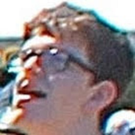

Aidan LinerudI am Aidan, a.k.a. Aidunlin. I'm part of Team Mean Machine, an FRC robotics team. I'm also an editor and web maintenance-er for my high school's journalism team, The Camasonian. Yes, I'm responsible for updating the site's theme, you've caught me red-handed. ;)
Here's some side projects I'm working on:
A multiplayer action game with pong-like mechanics, Paddle Battle. It’s very much in early development, though it's more or less me fiddling around with the Godot Engine.
A lightweight FRC scouting web app, MeanScout. It has offline support, customizable scouting templates, and a responsive layout. Too bad it was only used in competition once thanks to COVID-19. :(
You can view all my projects on GitHub. You could also contact me, but I don't want to get spammed by all my fans, so I'll let you figure out how to reach me.